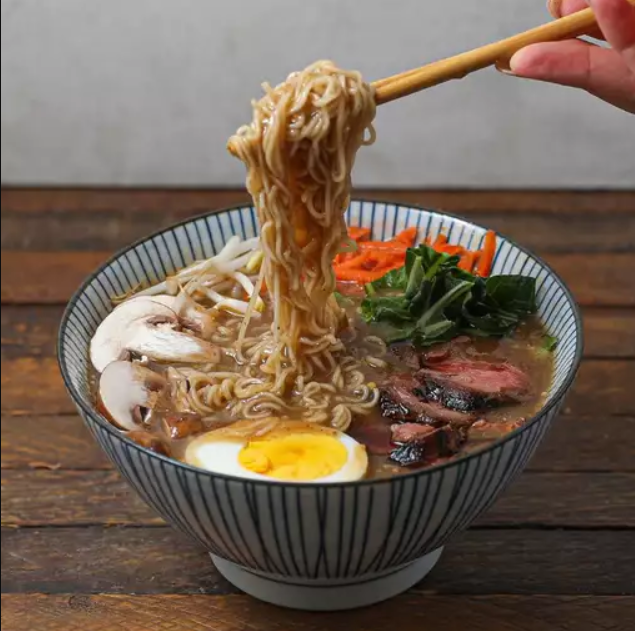

Miso ramen is a Japanese noodle soup flavored with a paste made from fermented soy beans. Miso is one of three types of tare (seasoning) used to flavor ramen broth in Japan—the other two are shio (salt) and shoyu (soy sauce)
Today we are going to learn how to make this delicious recipe
We are going to need the following ingredients in order to make our beef miso ramen.
Now that we have all our ingredients prepared, let's follow to below steps to make lip smaking biryani!
Combine steak and soy sauce in a plastic container with a lid. For best flavor results, marinate in the refrigerator for 2 hours.
Remove steak from the marinade and shake off excess. Discard the remaining marinade.
Heat coconut oil in a skillet over medium-high heat. Add steak and cook until firm and reddish-pink and juicy in the center, 3 to 4 minutes per side. An instant-read thermometer inserted into the center should read 130 degrees F (54 degrees C) for medium-rare. Remove from skillet and allow to rest for 10 minutes.
While the steak is resting, combine broth, miso paste, garlic, and sesame oil in a saucepan over medium heat; bring to a boil. Once broth is at a slow boil, add ramen noodles. Cook until noodles are soft, about 3 minutes. Season with salt and pepper.
Transfer broth and noodles to 2 bowls. Slice steak and place on top.